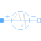
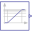
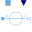
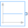

FrequencySweepVoltageSourceVoltage source with integrated frequency sweep |

|
Diagram
{kind=link}
Information
This information is part of the Modelica Standard Library maintained by the Modelica Association.
This source provides a constant RMS phase voltage V and phase angle phi,
whereas the frequency sweeps from
fStart to fStop with duration. The frequency sweeps such
way that on a logarithmic frequency scale, the frequency curve appears linear.

Parameters (6)
| fStart |
Value: Type: Frequency (Hz) Description: Start sweep frequency |
|---|---|
| fStop |
Value: Type: Frequency (Hz) Description: Stop sweep frequency |
| startTime |
Value: 0 Type: Time (s) Description: Start time of frequency sweep |
| duration |
Value: Type: Time (s) Description: Duration of frequency sweep |
| V |
Value: Type: Voltage (V) Description: RMS voltage of the source |
| phi |
Value: 0 Type: Angle (rad) Description: Phase shift of the source |
Connectors (2)
| pin_p |
Type: PositivePin Description: Positive quasi-static single-phase pin |
|
|---|---|---|
| pin_n |
Type: NegativePin Description: Negative quasi-static single-phase pin |
Components (5)
| v |
Type: ComplexVoltage Description: Complex voltage |
|
|---|---|---|
| i |
Type: ComplexCurrent Description: Complex current |
|
|  | logFrequencySweep |
Type: LogFrequencySweep |
|  | voltageSource |
Type: VariableVoltageSource |
|  | const |
Type: ComplexConstant |